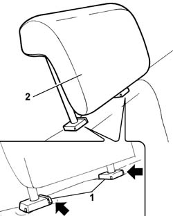

7050B10 l/h or r/h head restraint (one) of rear seat - r+r
- Path
- Procedures > 70 FITTINGS > 7050 REAR SEATS > 7050B rear seat head restraint/arm rest > 7050B10 l/h or r/h head restraint (one) of rear seat - r+r
- Kind
- repair procedure (removal / refitting; the operation number is the code)
- Applies to
- all engines; all production periods
- Interactive page
- https://sloeber94.github.io/elrnDB-fPnd/en/#/2753286
Applies to: all engines; all production periods
 Removing
Removing
 Refitting
RefittingRaise the head restraint to the end of travel position.
1. Press at the points shown by the arrows to release the head restraint pins from the guide and retaining bushes.
2. Remove the rear seat head restraint.

Applies to: all engines; all production periods
Refitting
RemovingFit the rear seat head restraint inserting the pins in the special housings in the bushes, pushing downwards until the pins are secured to the attachment on the bushes.
Check that the head restraint is correctly fitted, by raising it and checking that it does not slip out of the bushes.